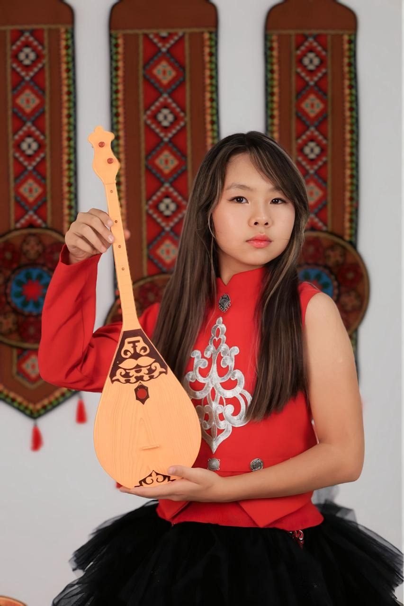
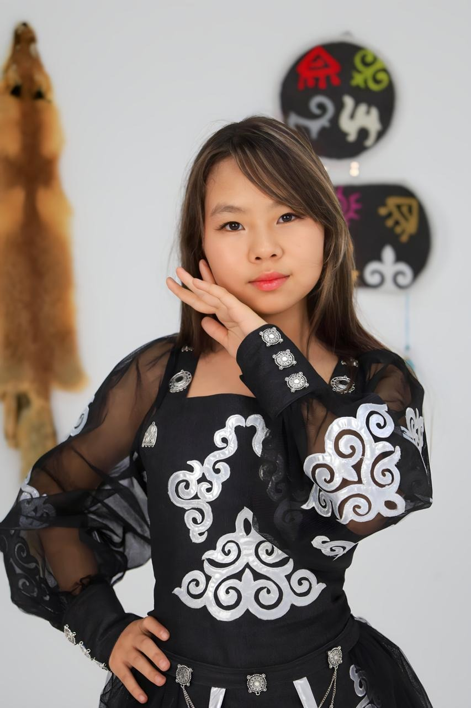

в кадре и на сцене

Талант, пластика и живые эмоции
Айару — обладательница многочисленных дипломов, медалей и Гран-при по вокалу. Поёт, играет на домбыре, фортепиано, гитаре и укулеле. Свободно работает в кадре на казахском и русском языках, изучает английский язык.
смотреть видеонедавние работы

От драматического кино до рекламы
Драматическая роль дочери убитой в ретро-сериале «Было дело» (70-е годы, серия «Холодное блюдо»), главные детские роли в рекламе «Хрум», «Central Dent Clinic», «Білімді бол», «Tito Arcanum», анонсе фильма «Карина» и 25+ проектах.
полное резюме
12
лет · 30.07.2014
157
рост (см)
25+
кино и реклама
4
инструмента + вокал